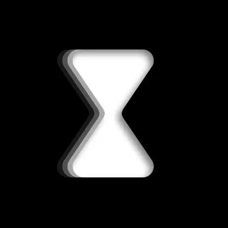
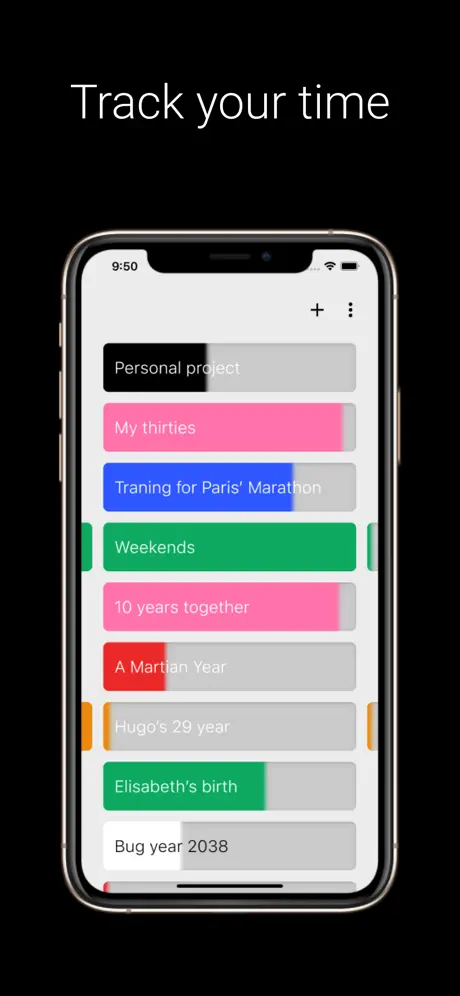
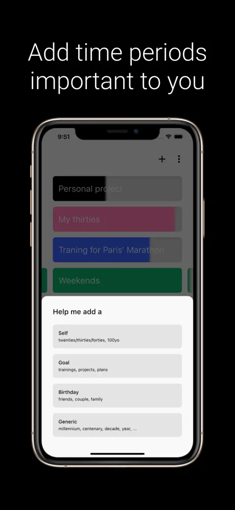
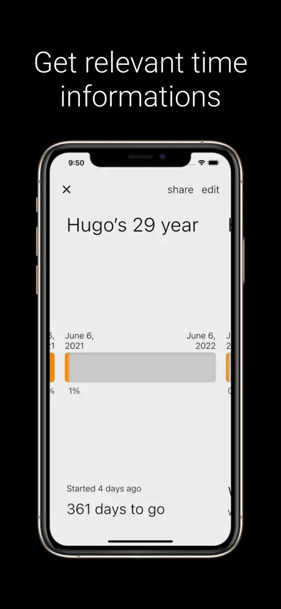
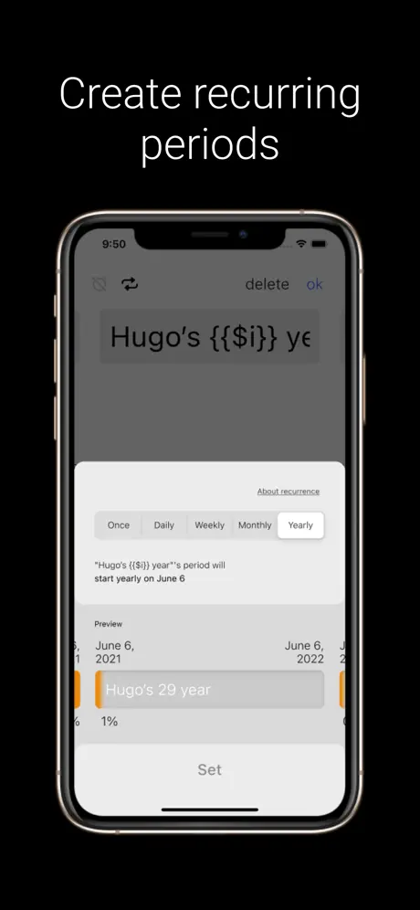
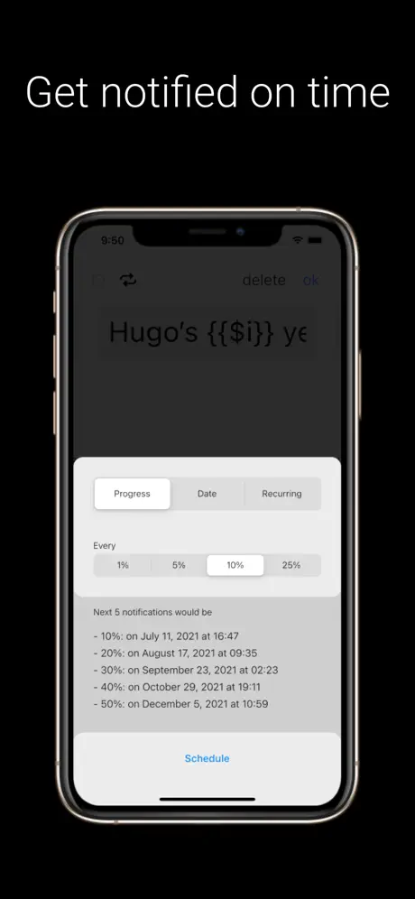
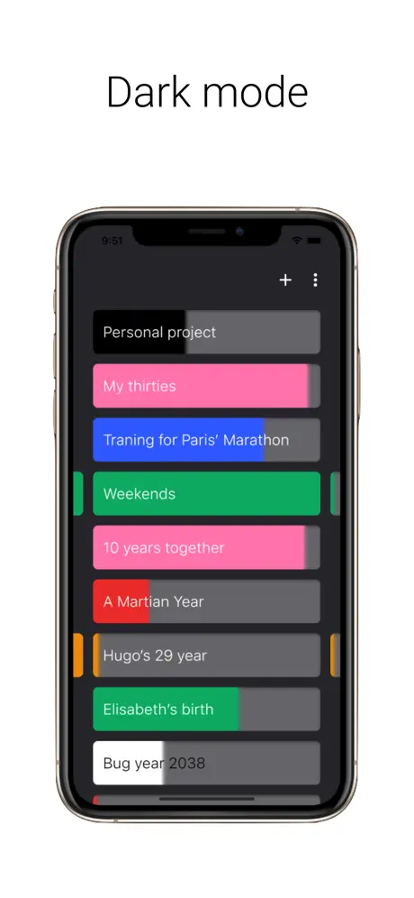

Epoch - Time flies, make it count
2021 - 2022
A gentle nudge to reflect on time passing. Life is too short not to focus on the things we love and want. A subtle, tracker free, reminder of the promises you made to yourself, helping you notice progress and focus on what matters to you. Infinite scrollable timelines, expanding on an idea from Years Progress.
I'm also working on a physical version of the timelines.
Features
- Infinite procedural timelines with no backend
- Simple templates to start quickly
- Local-first storage with a plain-text export that is easily shareable
- Customizable local notifications by %, completion, or recurring dates
- Zero analytics, no tracking, fully offline
App screenshots






Tech stack
Results
App launched on Product Hunt, published on the stores, and downloaded by more than 100 users.